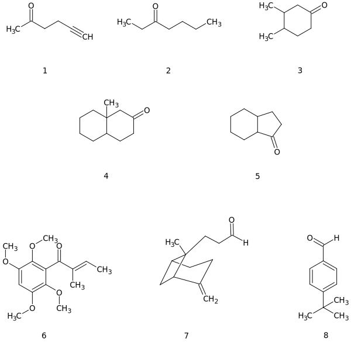
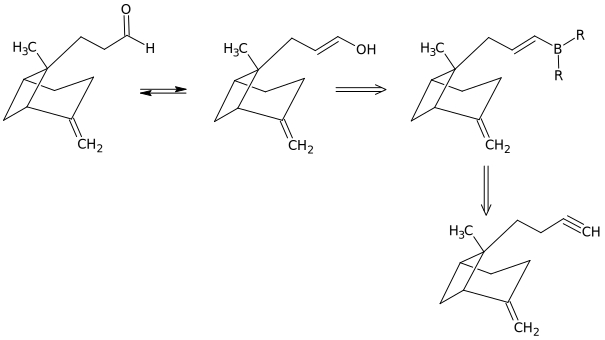

Планирование синтезов
Планирование синтезов Оглавление
Оглавление О проекте
О проектеЛекция 6. Ретрон карбонил

1. Трансформ окисление
2. Трансформ кетонное расщепление (для метилкетонов)
3. Трансформ Кучерова (для метилкетонов)
4. Трансформ Неффа
5. Трансформ Михаэля
6. Трансформ Зебаха
7. Трансформ Бодру-Чичибабина
8. Трансформ Фриделя-Крафтса для арилкетонов
9. Трансформ Гриньяра
9.1.
9.2.
9.3.
10. Трансформ Брауна
11. Трансформ Дикмана для циклических кетонов
12. Трансформ алкилирование
12.1.
Синтез
12.2.
Синтез
12.3.
Синтез
13. Трансформ тандем Михаэль + алкилирование
Синтез
14. Трансформ Брауна для альдегидов
Синтез
Задачи по теме

Задача 1
Анализ
Синтез
Задача 2
Анализ

Синтез
Задача 3
Анализ
Синтез
Задача 4
Анализ
Синтез
Задача 5
Анализ
Синтез
Задача 6
Анализ
Синтез
Задача 7
Анализ

Синтез
Задача 8
Анализ
Синтез